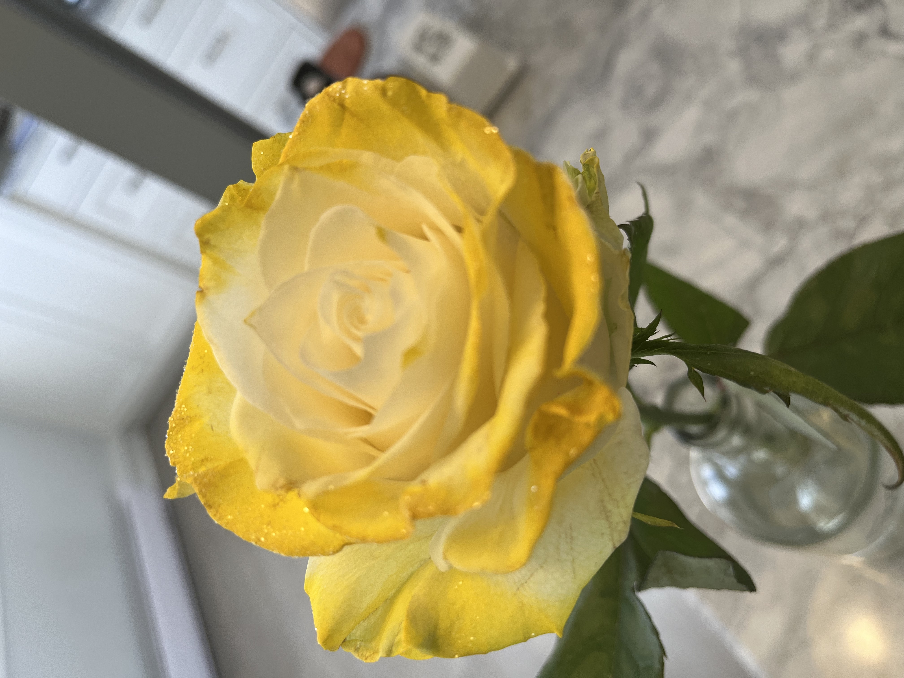

i thought this poem
was going to be
one thing but
then i saw the
yellow rose
and that was
something else
entirely.
the lips of those
outer petals
beckon me so
enticingly with
sparkles and rich
color, deepening
with age.
the gentle
sweetness of the
pale inner ruffles
yields to the touch
of my lips.
i’m enchanted,
the coexistence of
age and youth, so
many textures
to love
about a single
being.
2024-02-16
#poem, #poetry